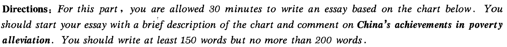
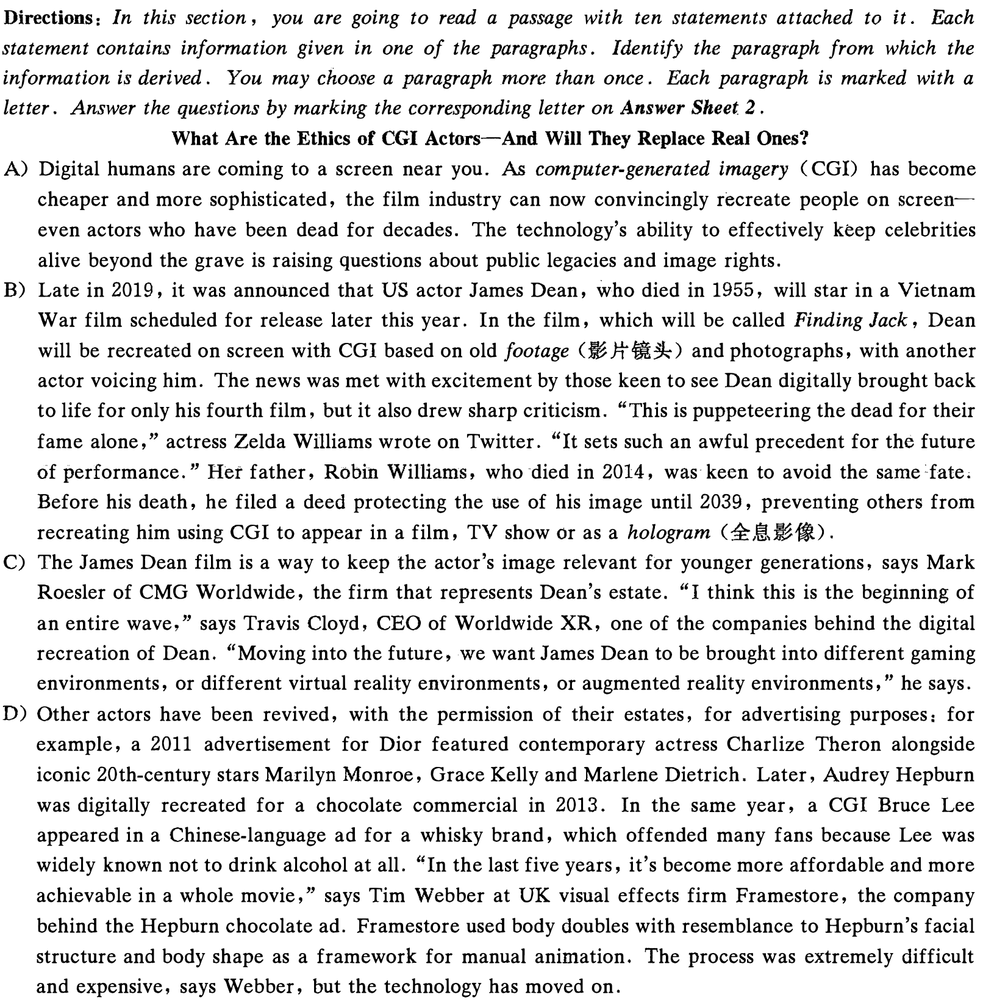
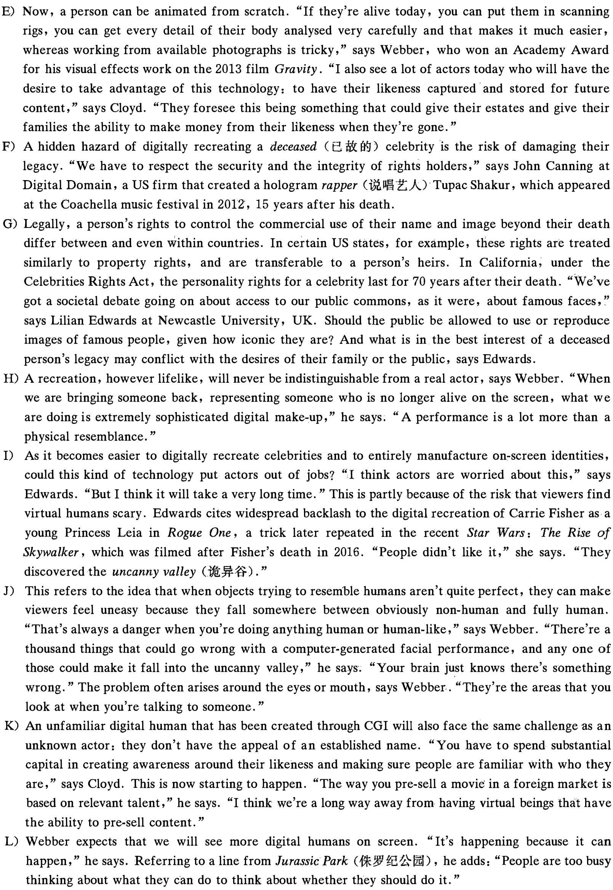
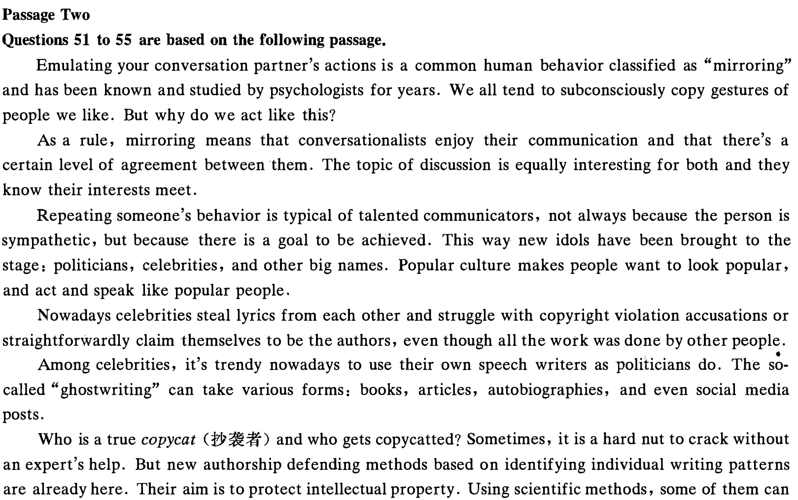
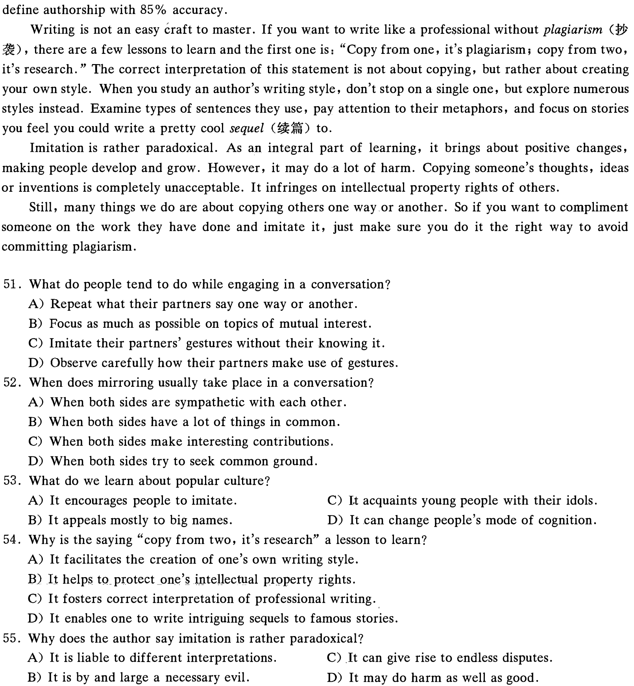

本页部分文字层异常，已保留原图文字区域；这些区域随窗口缩放，暂不能重新换行或复制。
2021 年 6 月大学英语六级考试真题（第 3 套）
Part I Writing ( 30 minutes)


Sources: China's National Bureau of Statistics, China's State Council Leading Group Office of Poverty Alleviation and Development
Part ][ Listening Comprehension (30 minutes)
提示：2021 年 6 月六级全国只考两套听力，本套听力内容与第一二套相同，故本套未重复显示。
Part ][ Reading Comprehension ( 40 minutes)
Section A
Directions: In this section , there is a passage with ten blanks. You are required to select one word for each blank from a list of choices given in a word. bank following the passage. Read the passage through carefully before making your choices; Each choice in the bank is identified by a letter. Please mark the corresponding letter for each item on Answer Sheet 2 with. a. single line through the centre. You may not use any of the words in the bank more than once.
At 43, I've reached the stage where women are warned to watch out for the creeping sadness of middle age. We're served up an endless stream of advice on "how to survive your 40s", as if we're in the endurance stage of a slow limp toward 26 . This is the age women start to become "invisible"-our value, attractiveness and power supposedly 27 by the vanishing of youth. But I don't feel like I'm fading into 28 . I feel more seen than I ever have, and for. the first time in my life, I have a clear-eyed view of myself that is 29 , compassionate and accepting.
When I look in the mirror, I'm proud of who I am-even those "broken" parts that for so long seemed impossible to love. So when advertisers try to sell me ways to "turn back the clock", I have to
30 a laugh. I wouldn't go back to the crippling self-consciousness of my youth if you paid me. This hard-won sense of self-acceptance is one of the joys of being an older woman. But it's a narrative often
31 out by the shame that marketers rely on to peddle us their diet pills, miracle face creams and breathable yoga pants-as if self-love is a 32 commodity.
本页部分文字层异常，已保留原图文字区域；这些区域随窗口缩放，暂不能重新换行或复制。
For some women I know, this sense of trust and self-belief later in life gave them the courage to leave dysfunctional relationships or 33 on new career paths. Others talked about enjoying their own company, of growth through 34 , deepening bonds of friendships, the ability to be more compassionate, less judgmental and to listen more and appreciate the small pleasures. Life past 40 is far from smooth sailing, but it's so much more than the reductive 35 we see in women's magazines and on the Hollywood big screen.
Section B

本页部分文字层异常，已保留原图文字区域；这些区域随窗口缩放，暂不能重新换行或复制。

36. There is an ongoing debate among the public as to whether the images of deceased celebrities should be
recreated.
37. The COi technology allows the image of the deceased James Dean to be presented to young people in
new settings.
38. It is very likely that the COi-recreated image of a deceased celebrity will fail to match the real actor
especially in facial expressions.
39. The use of digital technology can bring images of deceased celebrities back to the screen.
40. Recreating a deceased famous actor or actress may violate their legitimate rights.
41. More COi-recreated images of deceased celebrities are expected to appear on screen.
42. The image of James Dean will be recreated on screen with his voice dubbed by someone else.
43. However advanced the COi technology is, the recreated image will differ in a way from the real
actor.
44. A lot of actors today are likely to make use of the COi technology to have their images stored for the
benefit of their families.
45. Some actors are concerned that they may lose jobs because of the COi technology.
Section C
Directions: There are 2 passages in this section. Each passage is followed by some questions or unfinished statements. For each of them there are four choices marked A), B), C) and D). You should decide on the best choice and mark the corresponding letter on Answer Sheet 2 with a single line through the centre.
Passage One
Questions 46 to 50 are based on the foil owing passage.
You can't see it, smell it, or hear it, and people disagree on how precisely to define it, or where exactly it comes from. It isn't a school subject or an academic discipline, but it can be learned. It is a quality that is required of artists, but it is also present in the lives of scientists and entrepreneurs. All of us benefit from it and we thrive mentally and spiritually when we are able to wield it. It is a delicate thing, easily stamped out; in fact, it flourishes most fully when people are playful and childlike. Meanwhile, it works best in conjunction with deep knowledge and expertise.
This mysterious-but teachable-quality is creativity, the subject of a recently-published report by Durham· Commission on Creativity and Education; The report concludes that· creativity-should not inhabit the school curriculum only as it relates to drama, music, art and other obviously creative subjects, but that creative thinking ought to run through all of school life, infusing (jEr,ffi) the way humanities and natural sciences are learned.
The authors, who focus on education in England, off er a number of sensible recommendations, some of which are an attempt to alleviate the uninspiring and fact-based approach to education that has crept into policy in recent years. When children are regarded as vessels to be filled with facts, creativity does not prosper; nor does it when teachers' sole objective is coaching children towards exams. One suggestion from the commission is a network of teacher-led "creativity collaboratives", along the lines of existing maths hubs. ( rp it:,,) , with the aim of supporting teaching for creativity through the school curriculum.
Nevertheless, it is arts subjects through which creativity can most obviously be fostered. The value placed on them by the independent education sector is clear. One only has to look at the remarkable arts facilities at Britain's top private schools to comprehend this. But in the state sector the excessive focus on English, maths and science threatens to crush arts subjects; meanwhile, reduced school budgets mean diminishing extracurricular activities. There has been a 28.1 % decline in students taking creative subjects at high schools since 2014, though happily, art and design have seen a recent increase.
This discrepancy between state and private education is a matter of social justice. It is simply wrong and unfair that most children have a fraction of the access to choirs, orchestras, art studios and drama that
本页部分文字层异常，已保留原图文字区域；这些区域随窗口缩放，暂不能重新换行或复制。
their more privileged peers enjoy. As lives are affected by any number of looming challenges-climate crisis, automation in the workplace-humans are going to need creative thinking more than ever. For all of our sakes, creativity in education, and for all, must become a priority.
46. What do we learn from the passage about creativity?
47. What is the conclusion of a recently-published report?
48. What does the report say is detrimental to the fostering of creativity?
49. What do we learn about the private schools in the UK?
50. What should be done to meet the future challenges?

本页部分文字层异常，已保留原图文字区域；这些区域随窗口缩放，暂不能重新换行或复制。

51. What do people tend to do while engaging in a conversation?
52. When does mirroring usually take place in a conversation?
53. What do we learn about popular culture?
54. Why is the saying "copy from two, it's research" a lesson to learn?
55. Why does the author say imitation is rather paradoxical?
Part N Translation. ( 30 minutes)
Directions: For this part , you are allowed 30 minutes to translate a passage from Chinese into English . You should write your answer on Answer Sheet 2 .
云南是位于中国西南的一个省份,平均海拔1500米。云南历史悠久,风景秀丽,气候宜人。云南生态环境优越,生物多种多样,被誉为野生动植物的天堂。云南还有多种矿藏和充足的水资源,为全省经济的可持续发展提供了有利条件。 云南居住着25个少数民族,他们大多有自己的语言,习俗和宗教。云南独特的自然景色和丰富的民族文化使其成为中国最受欢迎的旅游目的地之,每年都吸引着大批国内外游客前往观光旅游。